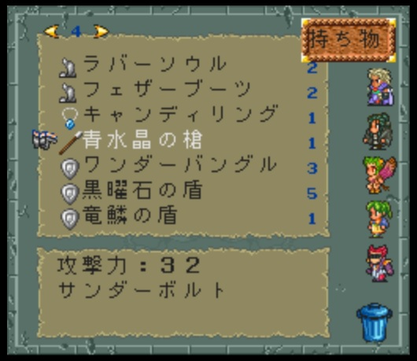
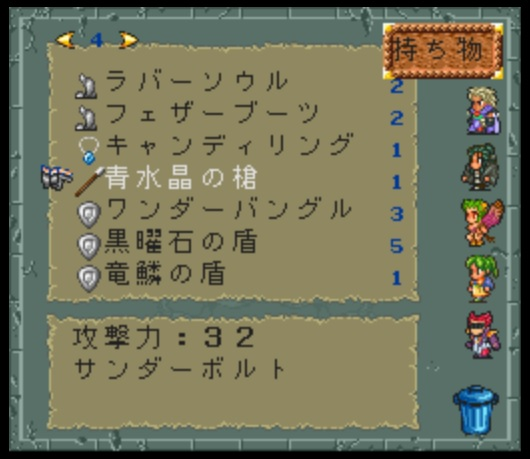

青水晶の槍
ホーム > ロマサガ２ > ノーマッド > ノーマッド（女）
どこにある？
沈没船にある。
どんな武器？
 

槍で固有技のサンダーボルトを覚えることができる。
固有技のサンダーボルト
原作ではサンダーボルトを使ってたって人あんまりいなかったのでは？ちょっと待ってください！確かに使いづらいけど、多分思っているよりは使えます！
サンダーボルトのダメージ計算
なぜ使いづらいのか？その原因はサンダーボルトのダメージ計算にあります。サンダーボルトのダメージ計算は冥術以外の術と同じです。
以下、カエル研究所より引用。
- ダメージ = [術威力 × 効果値 × 威力 ÷ 4] + 誤差 - 防御 × 5
- 術威力 = 魔力 + MAX(魔力 - 冥力, 0) × 2
参考